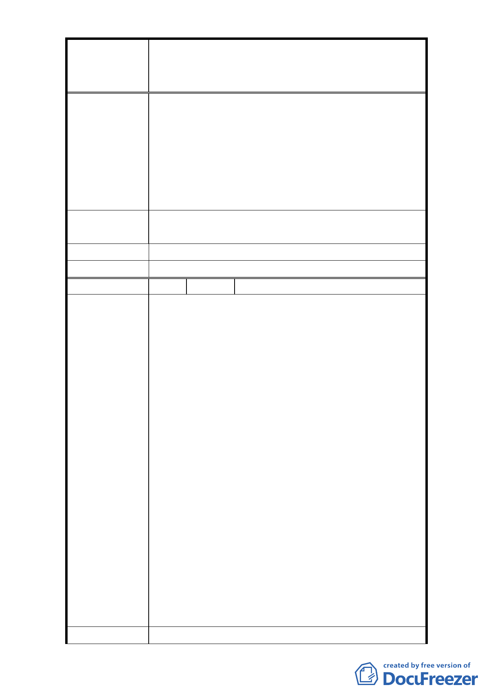

修訂臺北市大安區青田街保存區聚落風貌保存專用區細部計
案
名
畫、變更部分第三種住宅區、第三種商業區(特)為第三種住宅區
(特)(日式宿舍)及第三種商業區(特)(日式宿舍)暨劃定週邊地
區都市設計管制細部計畫案
物都貼著窄小的 6 米道路，這種讓人神經緊張的壓
迫感只有在落後國家貧民窟才看得到，在首善之都
這樣搞根本就倒行逆施，不是現代都市規劃應有的
格局！
3. 都更當然是必要的，但要保留區域原本的特色和優
點才是永續經營的根本之道，建成圓環的教訓還不
夠就是了？
1. 建物必須保留一定大小的前院。
建 議 辦 法 2. 地下室開挖率上限至多 80%。
市 府 回 覆 意 見 同編號 1 回覆意見。
委 員 會 決 議 同編號 1 決議。
編 號 24 陳情人 吳比娜
1. 8 月 4 日臺北市召開「修訂臺北市大安區青田街保存
區聚落風貌保存專用區都市設計」說明會。居民基
於公平原則，說：「為什麼臺北市其他地方的房子都
加以改建，而我不行？」，要求撤銷青田歷史街區的
限定。居民並認為當地日本老屋太過破落，文化局
不拆不修，是臺北市之恥，要拆掉蓋新大樓。
2. 原本整體街區，對於房屋的密度、建築高地、房子
的顏色和形貌都有限制，現在加以放寬，原本低密
度的街區，現在有了高密度發展的可能（因為可能
透過都市設計審議增加容積率），同時，原本規定退
陳 情 理 由 縮的空間（房子都要有前院），亦被刪除，地下室開
挖率比例的限定取消（會影響到地底保水）。
3. 青田街以老樹、生態聞名，但是植物生長需要整體
的環境，當只有幾所被列為古蹟、歷史建物老日式
宿舍被保存，而周邊的植物、動物、昆蟲消失，或
是逐漸改變，整個生態也將改變。社區居民就觀察
到因為新建案的開發，有些植物因為日照不足而枯
死，或是還是在改建過程中，難逃被砍除的魔手，
一點一點土壤、水紋的改變，消失的，是一種生活
品質。因此本人主張保持原計畫。
建 議 辦 法 1. 一個歷史街區的形成不容易，到底，那麼國外的聚
- 27 -